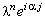
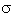
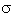

|
Сравнивая явную разностную схему (3.4),
аппроксимирующую дифференциальное уравнение параболического типа (3.3), с разностной схемой
для погрешности её решения (3.5), легко видеть, что разностная схема для погрешности
решения (3.5) по структуре совпадает с явной разностной схемой для однородного уравнения
параболического типа:
Это означает, что наличие свободного члена в правой части дифференциального уравнения
не оказывает влияния на устойчивость разностной схемы, аппроксимирующей это уравнение,
при условии, что свободный член не включает искомую функцию u. Таким образом,
для доказательства устойчивости разностной схемы (3.4) отбрасываем свободный член и
представляем решение разностной схемы в виде гармоники (3.7):
Подставляя данное выражение в разностную схему, получаем:
Далее, упрощаем полученное выражение, деля левую и правую его части на :
Преобразуем комплексные числа из экспоненциальной формы в тригонометрическую:
Используя тригонометрические тождества
| |
 |
(3.10) |
получаем формулу, из которой затем выражаем  :
С учётом необходимого условия устойчивости разностных схем (3.8) имеем:
В полученном двойном неравенстве правое условие выполняется автоматически (если  > 0*).
Поэтому рассмотрим более подробно левое условие:
Таким образом, при выполнении неравенства (3.11) явная разностная схема (3.4) устойчива.
Однако выражение (3.11) непригодно для использования, поскольку содержит
переменную величину - аргумент комплексного числа :
С учётом необходимого условия устойчивости разностных схем (3.8) имеем:
В полученном двойном неравенстве правое условие выполняется автоматически (если  > 0*).
Поэтому рассмотрим более подробно левое условие:
Таким образом, при выполнении неравенства (3.11) явная разностная схема (3.4) устойчива.
Однако выражение (3.11) непригодно для использования, поскольку содержит
переменную величину - аргумент комплексного числа  . Поэтому, чтобы
гарантировать устойчивость явной разностной схемы (3.4) не зависимо от значения ,
переходим к более строгому условию, задавая для максимально возможное значение,
равное 1: . Поэтому, чтобы
гарантировать устойчивость явной разностной схемы (3.4) не зависимо от значения ,
переходим к более строгому условию, задавая для максимально возможное значение,
равное 1:
Выражение (3.12) является условием устойчивости
явной разностной схемы, аппроксимирующей дифференциальное уравнение
параболического типа, свободный член которого не включает искомую функцию u.
Такие разностные схемы, устойчивость которых зависит от какого-либо условия,
ограничивающего выбор интервала деления на разностной сетке, называют
условно устойчивыми.
|